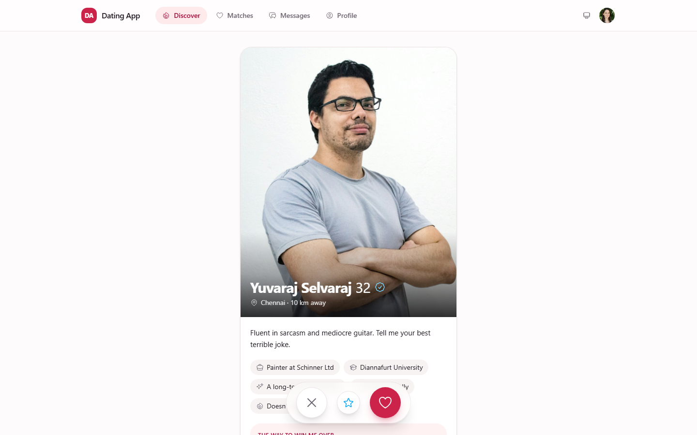
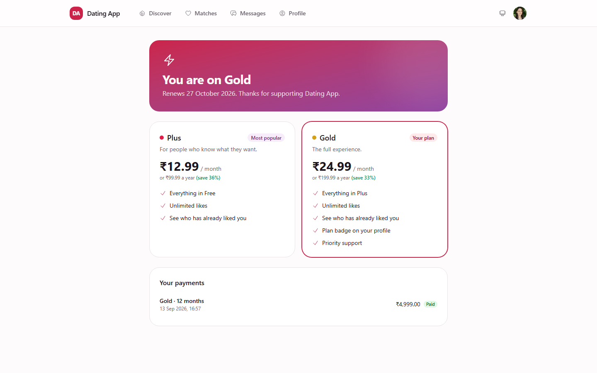
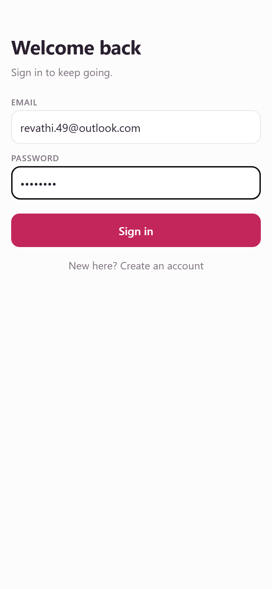
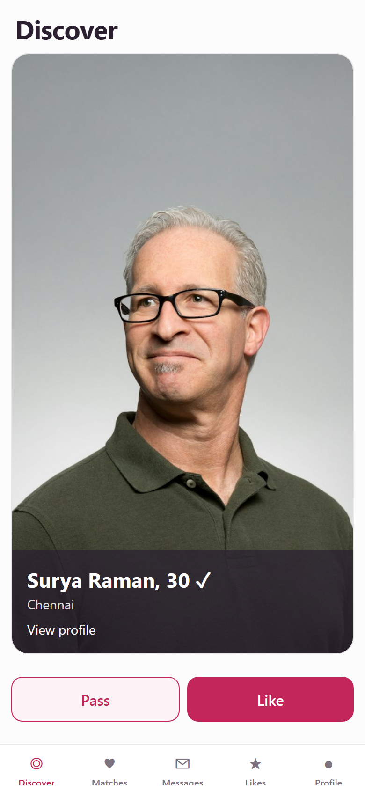
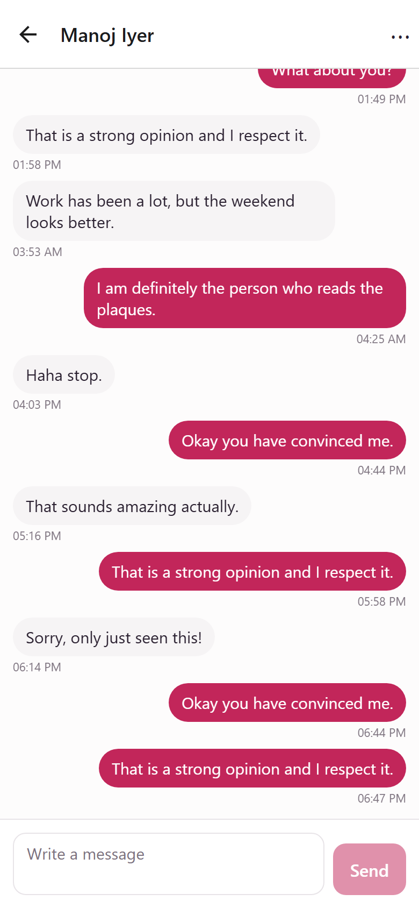

Part 1What it is
What the platform is
A complete dating product in three parts that share one database and one set of rules:
- A public website — the marketing pages, pricing and sign-up a visitor sees first, and a member app that runs in the browser.
- A mobile app (React Native / Expo, in
dating_app_mobile/) — the same product on a phone, over a REST API of 41 endpoints that calls the same services the website does. - A staff console — the part that makes the other two safe to operate: who is real, who has been reported, what was decided and why, who paid, and what members are being told.
The distinguishing feature is that safety is not bolted on. Verification queues, one case per reported member, a graduated enforcement ladder, appeals reviewed by somebody other than the original decider, and an audit trail of every staff action are the core, because they decide whether a dating product survives contact with real users.
The name, logo, colours, currency, plan names and prices, the profile questions, the interests, the report categories and every message a member receives are rows in the database, edited in the console. The screenshots show a demo configuration named “Dating App”.

Who uses it
Seven staff roles ship with the product, because the permissions they hold are genuinely different jobs and collapsing them would make the audit trail meaningless.
| Role | What they do | Notably cannot |
|---|---|---|
| Super Admin | Everything, including roles and permissions | — |
| Admin | Platform operations: staff, branding, settings, billing, integrations, and where the product is offered (countries, states, cities) | Read message content, decide appeals, change safety policy |
| T&S Lead | Owns safety policy: enforcement, appeals, risk weights, report categories and reasons | Change billing, branding, mail — or the geographic footprint |
| Senior Moderator | Verification, cases, the full enforcement ladder, the restricted (suspected-minor) queue | Settings |
| Moderator | Day-to-day cases and verification | Decide appeals — so an appeal always has an independent reviewer |
| Support | Answers members: sees personal details, payments, can give a plan or move a store subscription between accounts | Enforcement, message content |
| Analyst | Read-only analytics | See personal details or revenue |
One runs the platform, the other owns what counts as a ban. If the same person did both, “who approved this policy change?” would have one answer for every question. The same line puts Locations with Branding and Mail: which countries and cities the product serves is configuration, and the T&S Lead cannot change it.
What is included
| Area | What it covers |
|---|---|
| Dashboard & analytics | Sign-up funnel, matching health, gender balance by city, safety trends, retention split by verified status |
| Members | Search and twelve filters, full member record, photos, matches, reports, enforcement history, devices, timeline, billing |
| Photo verification | Risk-sorted queue with SLA pills, selfie-versus-profile comparison, enumerated rejection reasons, a separate restricted queue for suspected minors |
| Reports & cases | Reports aggregated into one case per subject, evidence in context, reporter credibility, graduated enforcement decisions |
| Enforcement & appeals | Warn, feature limit, shadow ban, suspend, permanent ban, device ban — each with a reason code and a member-facing statement; appeals assigned away from the original decider |
| Conversations | Metadata by default; revealing content needs a permission, a written justification, and is logged |
| Billing | Payments, subscriptions, plans and gateways — bought on the website (Stripe, Razorpay), bought in the app (App Store, Google Play), or granted by staff |
| Notifications | Push campaigns, editable templates, delivery logs, renewal reminders, Firebase and SMS setup |
| Masters | Interests, profile questions, report categories, enforcement reasons; countries, states and cities with a switch on each |
| Administration | Staff accounts, roles and a permission matrix, an immutable audit log |
| Settings | Branding and white-labelling, product and safety thresholds, mail, delivery logs, database backup |
| REST API | 41 endpoints for the mobile app, sharing the services of the web member app — see the API reference |


How it is built
| Layer | Choice | Why |
|---|---|---|
| Server | Laravel 12 on PHP 8.2, MySQL 8 | Ordinary hosting; a real schema with foreign keys |
| Website | Livewire 3 with Alpine, Tailwind v4 design tokens | Server-rendered screens that behave like an application; one colour changes the whole product |
| Mobile app | React Native on Expo (expo-router, react-query, secure store, expo-iap) | One codebase for iOS and Android; the token lives in the keychain, never in plain storage |
| Auth | Sessions for staff and web members; Sanctum tokens with abilities for the app | Staff and members are separate guards and separate tables |
| Money | Stripe and Razorpay hosted pages on the web; StoreKit and Play Billing in the app with server-side receipt verification | No card details ever reach this server; a store purchase is fulfilled through the same locked path as a web one |
dating_app/ dating_app_mobile/
app/Actions/ one job each src/api/ client, endpoints, error codes
app/Services/ the domain src/auth/ token store, session, the token swap
app/Livewire/ one class per screen src/app/ one file per screen (expo-router)
app/Http/ API, webhooks src/features/ swipe deck, photos, safety sheet
routes/ web · admin · api src/push/ FCM token and deep links
tests/ feature + acceptance docs/ the receipt contractAnything that changes the state of a member — a ban, a verification decision, a plan, a payment, a swipe — goes through a service or an action, never straight from a screen or from the app. That is why the website, the mobile API, a store notification and an automated rule can all take the same decision and produce the same audit trail.
Decisions that shape the product
- Cases, not reports. Five people reporting one profile produce one case. Staff act once and the decision resolves every report behind it.
- Message privacy by construction. Message bodies are hidden at the model level; revealing one needs a permission, a fixed reason, a written justification, and writes two records.
- Plans are features, not names. The application asks “does this plan include unlimited likes?”, never “is this member on Gold?”. A member may hold a web plan and a store plan at once; their tier is the best of the two and nothing ever shortens or downgrades an active plan.
- Geography is a rule, not a filter. One rule — country shown, state shown, city shown — is applied on every path that accepts a city, and existing members keep a place that has since been hidden.
- Everything a member reads is editable in the console; the keys behind it stay in code because routing and risk depend on them.
- Two user tables, deliberately.
usersis staff;app_usersis members. A match always stores the lower id first; moderation actions are append-only; every shadow ban carries a review date; an appeal is never assigned to its original decider; a payment is fulfilled exactly once however many times it is confirmed.
Going live, and what is deliberately not built
| Needed | Where from | Without it |
|---|---|---|
| SMTP details | Your mail provider | Password resets and plan emails are written to the log |
| Firebase service account | Firebase console | No push: matches and messages are not announced |
| Stripe or Razorpay keys + webhook secret | The gateway's dashboard | Nobody can buy on the website |
| App Store Connect API key, Play service account, notification URLs, product ids on each plan | App Store Connect, Play Console; Billing → Plans | Nobody can buy in the app; platform:preflight says so |
| SMS keys | Twilio, MSG91, Vonage or Textlocal | No phone verification (sms_unavailable) |
| Countries, states and cities, with coordinates | platform:import-geography, then Masters → Locations | Members cannot find their city; the distance filter has nothing to measure |
| Scheduler entry and a queue worker | Your server | Nothing expires, warns, sends or delivers on time |
| HTTPS domain | Your hosting | Webhooks and store notifications will not arrive |
Deliberately not built, stated plainly: face matching and liveness are simulated behind an interface; there is no proactive photo review; there is no email verification; there is no websocket (the app polls a thread every six seconds); message bodies are stored unencrypted behind permission, justification and logging; refunds are issued in the gateway's or store's own dashboard.
Part 2The flow, in plain language
The whole product on one chart
Read top to bottom. The left side is what a member does, on the website or in the app; the purple boxes are what the trust & safety team does when a member verifies, reports someone, or appeals; the blue boxes are the steps that exist only in the app. Every arrow is how the product behaves today.
member app only trust & safety team good outcome limit or waiting restriction or refusal jump — continues elsewhere on the chart
The app, screen by screen
The mobile app is a lane through the same flow. Every screen below names what it calls, what it shows while waiting, what it shows when the call fails, and which error codes it branches on — it never branches on message text. Paths are in dating_app_mobile/src/.


GET /discover.
GET /conversations/{id}/messages.Taken from the Expo web build at a phone size with the India demo data (node scripts/app-screenshots.mjs); the phone renders the same screens.
Register or sign in while pending and the server issues a token with profile:read, profile:write and verify only. GET /deck, POST /swipes, sending a message and filing a report answer 403 forbidden to that token. Onboarding writes re-fetch /me after every save; when account_status flips to active the app signs in again with the credentials it kept in secure storage during onboarding, stores the new token, and discards the credentials. If that fails (password changed elsewhere, offline) it shows a re-authentication modal. The old token keeps its reduced abilities for ever: nothing on the server upgrades a token in place.
| Screen | Calls | While waiting | On failure | Branches on |
|---|---|---|---|---|
Launchapp/_layout.tsx | GET /config | “Connecting…” | Offline screen with retry; maintenance screen with the server's countdown; update-required screen when the app is older than min_supported_version | maintenance, network |
Session bootauth/SessionProvider.tsx | GET /me with the stored token | “Signing in…” | Signed out on 401; full-screen blockers for a restricted or deactivated account; a rate-limit strip with the Retry-After countdown for any 429, anywhere | unauthenticated, account_restricted, account_deactivated, maintenance, rate_limited |
Sign in / Joinapp/(auth)/ | POST /auth/login, /auth/register | Button spinner | Field errors under the fields; the under-18 check mirrors min_age from config but the server still decides | validation_failed |
Onboarding photosapp/onboarding/photos.tsx | POST /me/photos (multipart), PATCH /me/photos/reorder, PATCH …/primary, DELETE …/{uuid}; then GET /me | Upload spinner on the tile | “You can have up to N photos” from the server's limit; field errors for a bad file | photo_limit_reached, validation_failed |
Onboarding about · interestsapp/onboarding/about.tsx, interests.tsx | PATCH /me/profile · PUT /me/interests; then GET /me | Button spinner, completion meter | Field errors; the cap on interests comes from the server | validation_failed |
Onboarding cityapp/onboarding/city.tsx | GET /countries, /states?country=, /cities?search= (two letters or more, debounced); PATCH /me | Spinner under the search box | “No city starts with…”; “showing the first 100, keep typing”; a hidden place is refused by the server with a field error | validation_failed |
Promotionauth/SessionProvider.tsx | POST /auth/login again, silently | — | Re-authentication modal asking for the password | any failure of the silent login |
Discoverapp/(tabs)/discover.tsx | GET /deck, POST /swipes | “Finding people…”; the next card's photo is prefetched | The card animates back and the banner says why: the daily like limit (422), a token that cannot swipe (403 — the app re-fetches /me), a 429. Reduce-motion turns off dragging. An empty deck is a real empty state with a link to preferences | validation_failed, forbidden, rate_limited |
Personapp/person/[uuid].tsx | POST /swipes (from a list), DELETE /matches/{uuid}, GET /conversations to find the thread | Button spinners | Banner with the server's reason | validation_failed, rate_limited |
Matches · Messagesapp/(tabs)/matches.tsx, messages.tsx | GET /matches, GET /conversations (cursor pages) | List spinner; pull to refresh | Empty states; closed threads simply leave the list | — |
Threadapp/thread/[uuid].tsx | GET /conversations/{uuid}/messages every 6 s while on screen, POST …/messages, POST …/read | The message appears at once (optimistic) | A failed send stays on the bubble as “Not sent · tap to retry”; a 403 on read or send means the thread was closed by a block or unmatch — the composer is replaced by “This conversation is closed” and polling stops | forbidden |
Likesapp/(tabs)/likers.tsx | GET /me/likers | List spinner | A free member gets the server's 403 with count and sees “N people liked you” — how many, never who | premium_required |
Report / blockfeatures/safety/ReportBlockSheet.tsx | POST /reports (category, optional message id, optional block), POST /blocks, DELETE /blocks/{uuid} | Button spinner | Field errors; after a block the thread closes and the lists refresh | validation_failed |
Profile edit · preferencesapp/profile/edit.tsx, preferences.tsx | PATCH /me, PATCH /me/profile, PATCH /me/preferences (age range always as a pair) | Button spinner | Field errors; “Saved.” | validation_failed |
Verificationapp/profile/verification.tsx | GET /verification, GET /verification/gesture, POST /verification (multipart selfie + code) | Camera with the code overlaid; “Sent. A reviewer will check it” | An expired code is a field error and a fresh code is one tap away; after the third attempt the screen says to contact support and offers nothing else | validation_failed, verification_attempts_exhausted |
Phoneapp/profile/phone.tsx | POST /phone/send-code, POST /phone/verify | “Code sent. It expires at …” | “Phone verification is not available right now” when no SMS gateway is configured — shown, not retried; a wrong code is a field error | sms_unavailable, validation_failed |
Blocked peopleapp/profile/blocks.tsx | GET /blocks, DELETE /blocks/{uuid} | Row spinner | Banner | — |
Premiumapp/profile/premium.tsx | GET /plans; the store for prices; POST /me/premium/receipt after a purchase or a restore; GET /me | “Connecting to the store…”; button spinner while the store and the server answer | A 409 finishes the store transaction and says the purchase belongs to another account; any other failure leaves the transaction open and says “tap Restore purchases to try again”; a plan from the website or from staff is shown and nothing is offered for sale | receipt_owned_elsewhere, store_unavailable, receipt_invalid, product_unknown |
Accountapp/profile/account.tsx | POST /auth/logout-all, DELETE /me (password) | Button spinner | A wrong password is a field error; the confirmation warns that deletion is permanent and, for a store plan, that the store keeps billing until the member cancels there | validation_failed |
Pushpush/PushRegistrar.tsx | POST /devices/push-token on launch and on token rotation; DELETE on sign-out | — | Best-effort; the next launch tries again. A tap on a notification opens the thread named in the server's link, or Matches | — |
src/app/_layout.tsx:49-66— the gate: config, update, session, blockerssrc/app/index.tsx:14-17·src/app/(tabs)/_layout.tsx:14-15— pending members are kept in onboardingsrc/auth/SessionProvider.tsx:92-107— the global codes;:159-181—swapTokenIfPromoted();:186-196—refreshMe()src/api/errors.ts:11-30— every code the app knows;src/api/client.ts—Retry-Afterparsingsrc/push/PushRegistrar.tsx:52-58— device token;:73— rotation;:87-90— removed on sign-out;:119— deep linkssrc/app/(tabs)/discover.tsx:42-67— the server decides;src/features/discover/SwipeDeck.tsx— the card comes back on refusalsrc/app/thread/[uuid].tsx:38-59— polling and the closed state;:74-98— optimistic sendsrc/app/profile/premium.tsx:58-87— redeem, then finish;src/app/profile/account.tsx:34-47— the deletion warningapp/Http/Controllers/Api/V1/AuthController.php:103-110—abilitiesFor(): what a pending token gets (server)
Part 3App ↔ console: the round trips
Each of these starts with something a member does in the app (or on the website), lands somewhere for staff, and comes back to the member as a status, a refusal or a plan. The engineering detail behind each is in Part 4.
app console side effect that fires worth noticing refused / restricted not built
ASelfie verification
Code → selfie → queue → decision → status back in the app
The code is what stops a photograph of a photograph, and that only holds because the server remembers what it issued: generated server-side, held ten minutes, compared with a constant-time check, consumed on use. Three attempts in total, counted on the server. Selfies are identity data — private disk, signed URL, permission, sensitive audit log on every view. The app learns the outcome by asking, because no notification is wired to the decision.
app/Services/Members/VerificationSubmission.php:30,43— TTL andissueGestureCode();:63submit();:73hash_equals;:99code consumed;:113max_attemptsapp/Http/Controllers/Api/V1/ProfileController.php:234-250—submitVerification(),verification_attempts_exhaustedat:246;:253gestureCode();:219verification()routes/api.php:185-187—ability:verify,throttle:verification;app/Providers/PlatformServiceProvider.php:69— 3 per 1440 minutesapp/Http/Controllers/Admin/VerificationSelfieController.php:27-44— permission, restricted check, sensitive log, private diskapp/Models/Verification.php:105—temporarySignedRoute;:138canBeApproved()app/Livewire/Verifications/Review.php:80,99,129— approve, reject, escalate;app/Actions/Verification/DecideVerification.php:30,64,104dating_app_mobile/src/app/profile/verification.tsx— the app's side
BReport → case → enforcement → the app → appeal
From a tap on “Report” to a lifted or upheld restriction
Reports become cases, and cases are what moderators work. Enforcement is one write path for the console and for automation alike; in a single transaction it appends a moderation action, creates the ban row and writes the mirror columns that the API middleware reads on every request — which is how a decision in the console becomes a 403 in the app within one request. The app does not know it has been shadow-banned, on purpose. The appeal is filed on the website's restricted page (the app links to it); it is routed away from the original decider at assignment and again at decision, and an overturn actually lifts the ban.
app/Http/Controllers/Api/V1/SafetyController.php:21—report();app/Services/Members/SafetyActions.php:28,115—report(),evidenceFor()app/Services/Moderation/CaseAggregator.php:26-32—absorb()underlockForUpdate;app/Enums/Severity.php:39—slaHours()app/Livewire/Cases/Show.php:77— claim on open;app/Enums/LadderStep.php:138,101— decision bar,createsBan()app/Actions/Moderation/ApplyEnforcement.php:38apply()·:209guard()·:247createBan()·:293mirrorOntoMember()·:119lift()·:175expire()·:318statusAfterRestrictions()·:329recomputeMirror();:69notified_userstored, nothing sentapp/Http/Middleware/EnsureAppUserIsNotBanned.php:24-65—appuser.active:account_restrictedat:50,account_deactivatedat:65, suspensions self-clear at:34-37app/Http/Resources/Api/V1/MeResource.php:36-40—shadow_bannedreported asactiveapp/Livewire/Member/Restricted.php:55-60— appeal withoriginal_decider_id;app/Models/Appeal.php:80—canBeDecidedBy();app/Livewire/Appeals/Show.php:91,113,146app/Models/ModerationAction.php:47— updates throwdating_app_mobile/src/ui/blockers.tsx:14—RestrictedScreen;src/auth/SessionProvider.tsx:96-100— the two codes
CPhoto upload — and the review that does not exist
Upload → GD re-encode → stored pending → shown to everyone → moderated only if reported
The security control on a photo is the re-encode: every image is decoded and written out again by GD, which destroys polyglot files and strips metadata including the GPS coordinates phone cameras embed. What does not exist is a review: photos are stored as pending and nothing in the deck or the profile resource filters on that status, so a new photo is visible to other members straight away. Moderation of photos is reactive, through reports, and acts on the member. This is stated here so nobody builds a launch plan on a queue that is not there.
app/Services/Media/MemberPhotoStore.php:49—store();:54— the typed limit;:154-163—imagecreatefromstringre-encode, EXIF dropped;:86—moderation_statuswritten as pendingapp/Http/Controllers/Api/V1/PhotoController.php:35,51— store,photo_limit_reached;:66,76,85— destroy, primary, reorder;:106ownPhoto()app/Services/Members/DiscoveryDeck.php:133—with(['photos', …]), no status filter;app/Models/Photo.php:50,55— the unused scopesapp/Http/Resources/Api/V1/PhotoResource.php:22-28—moderation_statusshown to the owner onlyroutes/admin.php— no photo review route;app/Livewire/— no photo moderation component
DPhone verification
A texted code: six digits, ten minutes, five guesses
app/Services/Sms/PhoneVerification.php:22,24,27— 10 minutes, 5 attempts, 60-second resend;:83— six random digits;:119-134— expiry and attempts on confirmapp/Http/Controllers/Api/V1/PhoneController.php:17,26—sendCode(),sms_unavailable;:42—verify()routes/api.php:175-177— the two throttlesdating_app_mobile/src/app/profile/phone.tsx:31-36— the app's branches
EIn-app purchase — and the notification loop
Store → receipt → verify → order → fulfil → plan; then renewals, refunds, grace and holds
A store purchase is one more way an order gets fulfilled, not a second billing system. The app posts an identifier; the server asks Apple or Google; the store's answer decides. Replaying the receipt or a notification changes nothing, and a notification whose fulfilment fails once is finished by the store's retry — the same guarantee the web gateways have, because it is the same code. The contract behind this, with the tests that prove it, is dating_app_mobile/docs/premium-receipt-contract.md.
app/Http/Controllers/Api/V1/StoreReceiptController.php:28-48— the endpoint and the status per reasonapp/Services/Store/StorePurchases.php:50redeem()·:88handleNotification()·:111appAccountToken fallback ·:126deleted member ·:153apply()·:184assertOwnership()·:214one order per transaction ·:250Checkout::fulfilapp/Services/Store/AppleStoreDriver.php:51verify()·:30sandbox host ·:94readNotification()·:176FAMILY_SHARED ·:165grace;app/Services/Store/Jws.php:58,91— chain to the pinned rootapp/Services/Store/GoogleStoreDriver.php:60verify()·:110acknowledge()·:177Pub/Sub token ·:155test purchasesapp/Services/Payments/Checkout.php:166-171—fulfil()under lock;:191— the store branchapp/Services/Billing/Subscriptions.php:116grantFromStore()·:211revokeExternal()·:259reassignExternal()·:314refreshMirror()app/Http/Controllers/StoreWebhookController.php:29-52— 400 / 500 / 2xx;routes/web.php:104app/Livewire/Billing/Subscriptions.php:96-111— move to another account;app/Livewire/Billing/Plans.php:42— product idstests/Feature/StoreBillingTest.php— replayed twice, failed once, sandbox on production, Family Sharing, deleted member, never downgradedating_app_mobile/src/app/profile/premium.tsx:58-87
FAccount deletion
Pseudonymise and soft-delete; the store keeps billing; the member stays in old cases
Soft-delete and anonymise, never a hard erase: reports this member filed are evidence in cases against other people, and the moderation record is append-only by design. What the member is owed — that nothing identifies them any more — is met by pseudonymising the row and removing everything personal. The one thing the platform cannot do is cancel a subscription the store bills, so the member is told that before they confirm, on both clients.
app/Services/Members/AccountDeletion.php:40delete()·:42password ·:56matches ended ·:61photo files ·:81store rows ·:100tokens ·:104-106pseudonym ·:116audit ·:124soft-deleteapp/Http/Controllers/Api/V1/ProfileController.php:186—DELETE /me;app/Livewire/Member/Account.php:142— the website's mirror;:119— deactivateapp/Services/Store/StorePurchases.php:126— a deleted member's renewal is ignoredresources/views/livewire/member/account.blade.php— the store warning on the website;dating_app_mobile/src/app/profile/account.tsx:34-47— in the app
GBlock and unmatch
One service closes the thread; both clients get 403 on send and on read
app/Services/Members/MatchActions.php:29,42—end(),closed;:53—endAllBetween();app/Services/Members/SafetyActions.php:86,98—block()app/Services/Members/MessageSender.php:129-133—assertUsableBy(), the same refusal;:154—isBlockedPair()app/Http/Controllers/Api/V1/MessageController.php:40,59— read and write both call the guard;app/Livewire/Member/Messages.php:62,99app/Services/Members/DiscoveryDeck.php:169— blocks excluded in both directionsdating_app_mobile/src/app/thread/[uuid].tsx:43,59,88—forbiddenmeans closed
HGeographic restriction
Which places are on offer, who may change that, and what happens to members already there
Until recently this was a dropdown filter: a hidden state vanished from the pickers while all three write paths still accepted its cities. Now a single rule is applied everywhere a city is written, the listings read the same scope, and the city itself has a switch so one city can be turned off without its state. Changing the footprint is platform configuration, so it sits with the Admin, not the T&S Lead. Members already in a hidden place keep it — the documented behaviour for countries, now true for states and cities as well.
app/Rules/SelectableCity.php:29-46— the rule;:41— the member's current city passes;app/Models/City.php:34—scopeSelectable()app/Http/Controllers/Api/V1/ProfileController.php:46·AuthController.php:35·app/Livewire/Member/Auth/Register.php:71·app/Livewire/Member/Profile.php:219— the four write pathsapp/Http/Controllers/Api/V1/GeographyController.php:55-92— the search, cap 100, prefix match;app/Livewire/Member/Concerns/PicksCity.php:31-52— the website's type-aheaddatabase/migrations/2026_09_26_000001_add_is_active_to_cities.php·2026_09_26_000002_add_name_index_to_cities.phpapp/Livewire/Settings/Locations.php:310—toggleCityActive();:454— the warning;routes/admin.php:251-252—permission:edit_general_settings;app/Support/Navigation.php:215app/Console/Commands/ImportGeography.php:54,120,163— the importertests/Feature/GeographicRestrictionTest.php·LocationsAccessTest.php·CitySearchTest.php·GeographyImportTest.php
Part 4Engineering detail
Twelve diagrams derived from the code as it stands. Each is collapsed; open the ones you need, or “Expand all”. Under each is the file and line where that logic lives.
blocked / refused / restricted not built / no code path side effect that fires worth noticing
1Three audiences, four guards
Who can be signed in, on what, against which table
Two populations, two tables. Members are app_users, reachable through a browser session on the member guard or a Sanctum token on the api guard. Staff are users, only ever on the web guard. Being signed in on one guard grants nothing on another. The appuser.active and member.active middleware turn a ban into a locked door by reading the mirror columns on app_users on every request; staff.active also runs on Livewire updates so a suspended moderator loses an open tab, not just the next login.
config/auth.php:49— the guards and providers;:119— the two password brokersapp/Http/Controllers/Auth/PasswordResetController.php:29,35— audience → brokerroutes/web.php:42-61— member guest andauth:membergroups;:118-119— staff loginroutes/api.php:101—auth:sanctum,appuser.active,throttle:apibootstrap/app.php:71-80— middleware aliases;app/Http/Middleware/EnsureStaffIsActive.php:21;app/Providers/AppServiceProvider.php:55— persistent Livewire middleware
2Member lifecycle
From visitor to active — from either client
Every account starts pending and promotion to active happens in exactly one place, ProfileCompletion::refresh(), when at least half of the eight checklist items are done. Both clients can fill every item. A token is issued with the abilities of the status at that moment and is never upgraded in place; the app's silent re-login (Part 2) exists for exactly this. Leaving active is either the member's own choice or an enforcement; when an enforcement ends, the account returns to the status it held before.
database/migrations/2026_02_01_000001_create_app_users_table.php:53—account_statusdefaultapp/Services/Members/MemberAccounts.php:25— shared registration;app/Http/Controllers/Api/V1/AuthController.php:23,103-110— register andabilitiesFor()app/Services/Members/ProfileCompletion.php:17,33,40,42— checklist,refresh(), the 50% line,profile_completed_atapp/Livewire/Member/Profile.php:175,191— web upload and delete callrefresh();app/Http/Controllers/Api/V1/ProfileController.php:61,129— profile and interests do;:39—PATCH /medoes not;app/Http/Controllers/Api/V1/PhotoController.php:35routes/api.php:108-125— theme/*routesapp/Livewire/Member/Account.php:119,142— deactivate, delete;app/Actions/Moderation/ApplyEnforcement.php:318—statusAfterRestrictions();app/Enums/BanType.php:45
3Discovery deck
Every exclusion, in the order the query applies them
The exclusions are the safety rules of the product expressed as SQL. A shadow ban has no code of its own — shadow_banned is simply not active, and this is the only place that takes effect. Blocks are checked in both directions. Geography is one of three scopes, and the radius needs coordinates on both sides — which is why the city importer requires them. The website widens to anywhere when the local area is empty and says so; the mobile API returns the empty deck.
app/Services/Members/DiscoveryDeck.php:169—query();:90—scopeFor();:205—withinRadius();:150—pickIds();:50—for();:69—withFallback();:133— photos loaded unfilteredapp/Http/Controllers/Api/V1/SwipeController.php:22-24— API usesfor();app/Livewire/Member/Discover.php:143— website useswithFallback()app/Models/AppUser.php:245—scopeAgeBetween;database/migrations/2026_09_22_000003_add_missing_hot_path_indexes.php
4Swipe → match → conversation
One transaction, from a like to an open thread
A match is derived, never asserted. The daily like limit is a product rule, not burst protection, so it lives here — counted inside the transaction behind a lock on the member's own row, so concurrent requests cannot all read the same total and walk past the cap. The app animates the card back on that 422 and shows the reason; it never decides the outcome itself.
app/Services/Members/SwipeRecorder.php:26record()·:43lock ·:45,135daily limit ·:47updateOrCreate·:62-74reciprocity and the match ·:110afterCommitpushapp/Models/MatchRecord.php:48— canonical ordering;app/Models/AppUser.php:334—hasPremiumFeature('unlimited_likes')routes/api.php:140-143—deckandswipeswithability:swipe
5Messaging and safety
Sending a message: the three guards, one service for both clients
Three rules, answered in one place for both clients, on read as well as on write. A block gets the same refusal as a closed thread rather than its own, because telling someone they were blocked tells them exactly who to reach another way. The block check is a backstop; closing the thread on block is the primary guard.
app/Services/Members/MessageSender.php:23send()·:129assertUsableBy()·:154isBlockedPair()·:102notifyRecipient()app/Http/Controllers/Api/V1/MessageController.php:40,59— read and write call the guard;:18— conversations, open onlyapp/Services/Members/MatchActions.php:29,53;app/Livewire/Member/Messages.php:62,99;app/Services/Members/ContentScanner.php
6Report → case → enforcement ladder
From a report to a ban, and what is written where
Reports become cases under a row lock, so ten reports in a minute are one item in the queue. Enforcement is one write path for the console and for automation alike; a shadow ban cannot be created without a review date, because it is invisible to the member and nothing but a calendar entry would prompt anyone to revisit it. Actions are append-only at the model level; a lift is a new action linked back, never an edit.
app/Services/Members/SafetyActions.php:28,115;app/Services/Moderation/CaseAggregator.php:26,32,61;app/Enums/Severity.php:39app/Livewire/Cases/Show.php:77;app/Enums/LadderStep.php:138,101app/Actions/Moderation/ApplyEnforcement.php:38,209,247,293,119,175,318,329;:69—notified_user;:271—previous_account_statusapp/Models/ModerationAction.php:47;app/Livewire/Member/Restricted.php:55;app/Models/Appeal.php:80;app/Livewire/Appeals/Show.php:91,113,146;app/Enums/AppealStatus.php:58
7Message content reveal
Why bodies are hidden, and what it takes to read one
app/Models/Message.php:31—$hidden;app/Livewire/Conversations/Show.php:73,101app/Services/Messaging/MessageRevealService.php:46reveal()·:144guardReason()·:103,132the two windows;config/platform.php:185— the four reasons
8Subscriptions and payment — web and store
Two confirmations, one fulfilment — and now two sources of plans
A payment may be confirmed several times — return page, webhook, webhook retry, store notification redelivery — and the member must end up with exactly one subscription per transaction. Everything converges on fulfil(), which re-reads the order under a row lock and does nothing if it is already paid. Plans from different sources coexist: a grant supersedes only rows of its own family, and the mirror on app_users is recomputed from all active rows in one place, so a member with a web Gold plan until December who buys store Plus keeps Gold until December.
app/Livewire/Member/Premium.php:34;app/Http/Controllers/Member/CheckoutController.php:29,83,111app/Services/Payments/Checkout.php:40checkout gateways only ·:63start()·:120reconcile()·:166-171fulfil()lock and already-paid ·:191store branch ·:207early renewal ·:250-303handleWebhook()app/Services/Billing/Subscriptions.php:52grant()·:116grantFromStore()·:211revokeExternal()·:259reassignExternal()·:314refreshMirror()·:358expireDue()·:440announceStart()app/Services/Store/StorePurchases.php:50,88,214;app/Http/Controllers/WebhookController.php:30;app/Http/Controllers/StoreWebhookController.php:29app/Services/Payments/StripeDriver.php:161— 300-second window;app/Services/Payments/RazorpayDriver.php:132;bootstrap/app.php:46—webhooks/*exempt from CSRFdatabase/migrations/2026_09_22_000001_add_processed_at_to_gateway_events.php·2026_09_25_000001_add_store_billing.php
9Verification
A code the server remembers, a photo the server keeps private
app/Services/Members/VerificationSubmission.php:30,43,63,73,99,113;app/Livewire/Member/Verification.php:34,62;app/Http/Controllers/Api/V1/ProfileController.php:234,253routes/api.php:185-187;app/Providers/PlatformServiceProvider.php:69;routes/admin.php:68-82app/Http/Controllers/Admin/VerificationSelfieController.php:27-44;app/Models/Verification.php:105,138;app/Livewire/Verifications/Review.php:80,99,129;app/Actions/Verification/DecideVerification.php:30,64,104
10Notifications
What fires today, and what is only a template
app/Services/Members/SwipeRecorder.php:110·app/Services/Members/MessageSender.php:102;app/Services/Billing/Subscriptions.php:440—announceStart()app/Console/Commands/SendRenewalReminders.php:30-31;app/Console/Commands/SendCampaigns.php:53,95database/seeders/NotificationTemplateSeeder.php:97-160— every template key; the unwired ones are referenced nowhere inapp/app/Actions/Moderation/ApplyEnforcement.php:69;app/Services/Notifications/MemberNotifier.php:34,58;app/Notifications/TemplatedMail.php:25;app/Listeners/RecordEmailOutcome.php:36;app/Jobs/SendMemberPush.php:39;app/Services/Push/FcmSender.php
11Scheduler
One cron entry, three commands, and what happens without them
routes/console.php:25,33,39;app/Console/Commands/RunDueTasks.php:35,41;app/Actions/Moderation/ApplyEnforcement.php:175app/Http/Middleware/EnsureAppUserIsNotBanned.php:34-37·app/Http/Middleware/EnsureMemberCanUseApp.php:38-41— suspensions self-clear;README.md— the scheduler and the queue worker
12API surface map
The middleware stack every authenticated call passes through
Forty-one endpoints, eight public. Everything else passes the same gates before a route-specific ability or throttle is considered. Responses always go through a Resource — that is where risk scores, internal notes and shadow-ban state would otherwise leak. The machine-readable version of this table, with every schema and error code, is the API reference (docs/openapi.yaml), and a test fails if a route is added without appearing there.
All 41 endpoints
| Endpoint | Auth | Ability | Throttle | Handler |
|---|---|---|---|---|
| Public — 8 | ||||
| GET /api/v1/config | none | — | — | routes/api.php:44 |
| GET /api/v1/plans | none | — | — | routes/api.php:62 — plans on sale with App Store / Google Play product ids |
| GET /api/v1/interests | none | — | — | routes/api.php:75 |
| GET /api/v1/countries | none | — | — | GeographyController::countries:25 |
| GET /api/v1/states | none | — | — | GeographyController::states:33 |
| GET /api/v1/cities | none | — | — | GeographyController::cities:55 — ?search= two letters or more, ≤ 100 rows, meta.truncated |
| POST /api/v1/auth/register | none | — | auth · 8/min per IP, 5/min per IP+email | AuthController::register:23 — optional city_id through SelectableCity |
| POST /api/v1/auth/login | none | — | auth | AuthController::login:48 |
| Session — 2 · all rows below: auth:sanctum + appuser.active + throttle:api 90/min | ||||
| POST /api/v1/auth/logout | token | — | api | AuthController::logout:79 |
| POST /api/v1/auth/logout-all | token | — | api | AuthController::logoutAll:86 |
| Me — 6 | ||||
| GET /api/v1/me | token | — | api | ProfileController::me:30 — premium_source and auto_renewing included |
| PATCH /api/v1/me | token | — | api | ProfileController::update:39 — city through SelectableCity (current city kept); does not refresh completion |
| DELETE /api/v1/me | token | — | api | ProfileController::destroy:186 → AccountDeletion — password; soft-delete + anonymise; store plan not cancelled |
| PATCH /api/v1/me/profile | token | — | api | ProfileController::updateProfile:61 — refreshes completion |
| PATCH /api/v1/me/preferences | token | — | api | ProfileController::updatePreferences:94 — validates the merged age pair |
| PUT /api/v1/me/interests | token | — | api | ProfileController::syncInterests:129 — refreshes completion |
| Photos — 4 · ability:profile:write, so a pending token can use them | ||||
| POST /api/v1/me/photos | token | profile:write | api | PhotoController::store:35 → MemberPhotoStore; 422 photo_limit_reached; refreshes completion |
| PATCH /api/v1/me/photos/reorder | token | profile:write | api | PhotoController::reorder:85 — full list, atomic, 403 on any foreign uuid |
| PATCH /api/v1/me/photos/{uuid}/primary | token | profile:write | api | PhotoController::primary:76 |
| DELETE /api/v1/me/photos/{uuid} | token | profile:write | api | PhotoController::destroy:66 — soft; refreshes completion |
| Discovery — 2 | ||||
| GET /api/v1/deck | token | swipe | deck · 60/min | SwipeController::deck:22 → DiscoveryDeck::for() |
| POST /api/v1/swipes | token | swipe | swipe · 120/min, halved under 24h | SwipeController::store:32 → SwipeRecorder |
| Matches and likes — 3 | ||||
| GET /api/v1/matches | token | — | api | ProfileController::matches:197 |
| DELETE /api/v1/matches/{uuid} | token | — | api | ProfileController::unmatch:212 → MatchActions::end |
| GET /api/v1/me/likers | token | — | api | ProfileController::likers:154 — 403 premium_required with the count unless the plan has see_likers |
| Premium — 1 (plus GET /plans above) | ||||
| POST /api/v1/me/premium/receipt | token | profile:write | receipt · 10/hour | StoreReceiptController::store:28 → StorePurchases::redeem → Checkout::fulfil; 422 product_unknown / receipt_invalid, 409 receipt_owned_elsewhere, 503 store_unavailable |
| Conversations — 4 | ||||
| GET /api/v1/conversations | token | — | api | MessageController::conversations:18 — open only |
| GET /api/v1/conversations/{uuid}/messages | token | — | api | MessageController::index:35 — assertUsableBy |
| POST /api/v1/conversations/{uuid}/messages | token | message | message · 30/min, halved under 24h | MessageController::store:55 → MessageSender |
| POST /api/v1/conversations/{uuid}/read | token | — | api | MessageController::markRead:78 |
| Safety — 4 | ||||
| POST /api/v1/reports | token | report | report · 10 per 60 min | SafetyController::report:21 → SafetyActions |
| GET /api/v1/blocks | token | — | api | SafetyController::blocks:46 |
| POST /api/v1/blocks | token | — | api | SafetyController::block:58 → closes the thread |
| DELETE /api/v1/blocks/{uuid} | token | — | api | SafetyController::unblock:71 |
| Phone — 2 | ||||
| POST /api/v1/phone/send-code | token | — | 4 per 10 min | PhoneController::sendCode:17 — 503 sms_unavailable without a gateway |
| POST /api/v1/phone/verify | token | — | 10 per 10 min | PhoneController::verify:42 |
| Devices — 2 · no ability on purpose: an account under review must still be reachable | ||||
| POST /api/v1/devices/push-token | token | — | api | DeviceController::storePushToken:23 |
| DELETE /api/v1/devices/push-token | token | — | api | DeviceController::deletePushToken:56 |
| Verification — 3 | ||||
| GET /api/v1/verification | token | — | api | ProfileController::verification:219 |
| GET /api/v1/verification/gesture | token | — | api | ProfileController::gestureCode:253 — server-issued, 10 min |
| POST /api/v1/verification | token | verify | verification · 3 per day | ProfileController::submitVerification:234 |
routes/api.php:37-190— every route, its middleware and ability;app/Http/Middleware/RespectMaintenanceMode.php:23-36app/Providers/PlatformServiceProvider.php:46-77— the throttle buckets,receiptat:71;:48-57— halving for accounts under 24 hoursapp/Http/Controllers/Api/V1/AuthController.php:103-110— abilities by status;app/Http/Resources/Api/V1/MeResource.php:36-50docs/openapi.yaml·tests/Feature/OpenApiSpecTest.php— the spec, and the test that keeps it honest